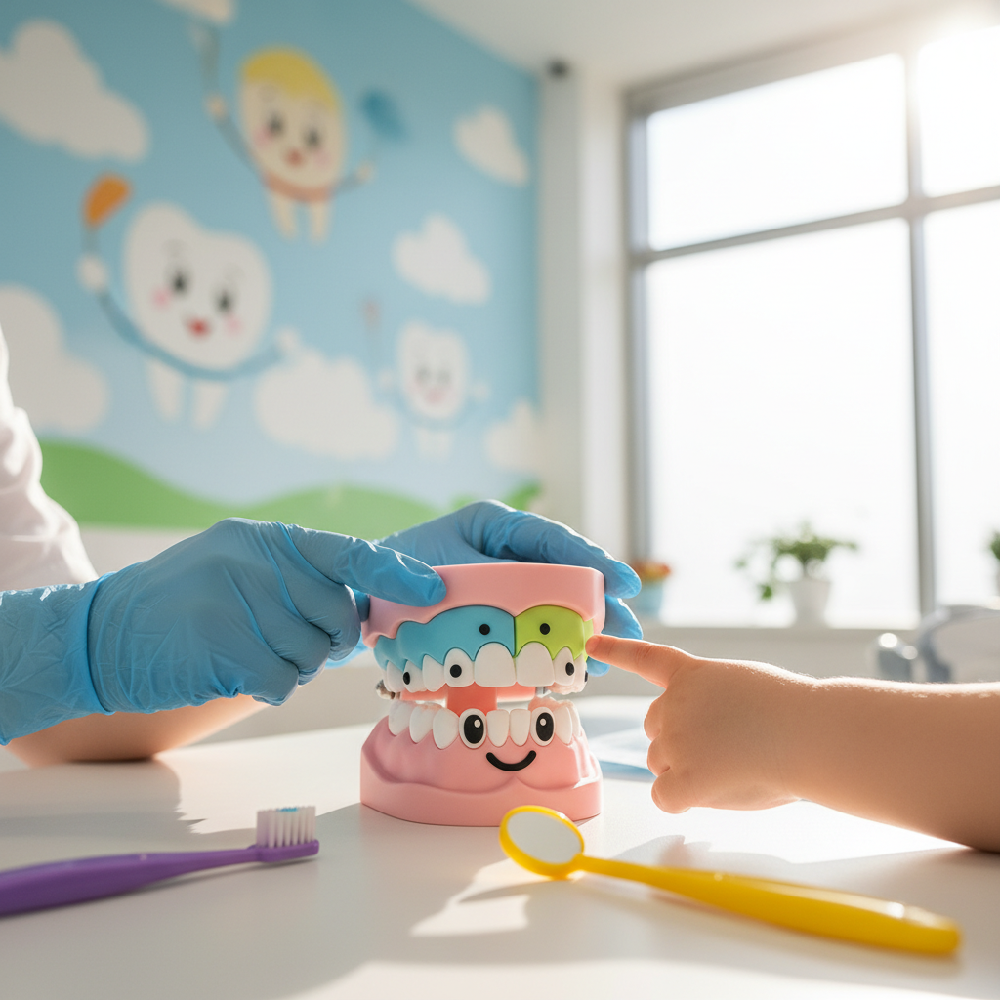
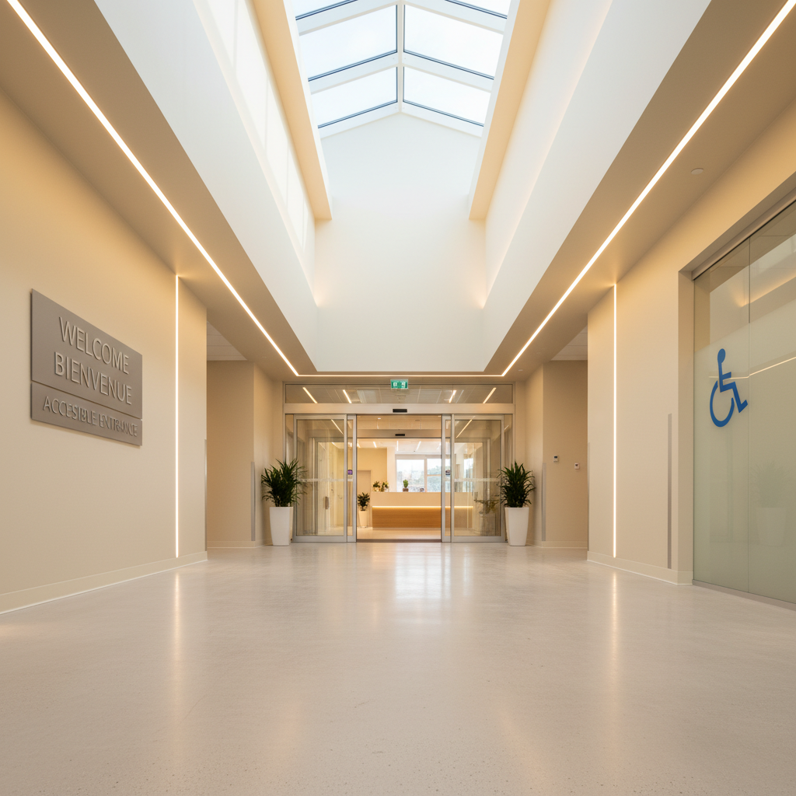

Zahnmedizin für besondere Bedürfnisse
Unser Herz schlägt besonders für die Patienten, die ein Mehr an Zeit, Einfühlungsvermögen und spezieller Betreuung benötigen. Wir sind darauf spezialisiert, Kindern und Menschen mit Handicap eine angstfreie und positive Behandlungserfahrung zu ermöglichen.

Kinderzahnheilkunde
Der erste Zahnarztbesuch prägt. Deshalb legen wir größten Wert darauf, dass Kinder sich bei uns wohl und sicher fühlen. Wir nehmen uns die Zeit, alles spielerisch zu erklären und eine vertrauensvolle Beziehung aufzubauen.
- Spielerische Eingewöhnung: Wir führen Kinder langsam und ohne Druck an die Behandlung heran.
- Geduldiges Team: Unser Team ist im Umgang mit Kindern geschult und agiert stets einfühlsam.
- Positive Erlebnisse: Wir möchten, dass Ihr Kind gerne wiederkommt und Zahnpflege als etwas Selbstverständliches lernt.

Patienten mit Handicap
Jeder Mensch hat ein Recht auf die bestmögliche zahnmedizinische Versorgung. Unsere Praxis ist darauf ausgelegt, Patienten mit körperlichen oder geistigen Einschränkungen optimal zu betreuen.
- Barrierefreie Praxis: Alle Räume sind schwellenlos und mit dem Rollstuhl problemlos erreichbar.
- Individuelle Zeitplanung: Wir planen bewusst mehr Zeit für Termine ein, um Hektik zu vermeiden.
- Maßgeschneiderte Konzepte: In enger Absprache mit Patienten und Betreuern entwickeln wir das passende Behandlungskonzept.